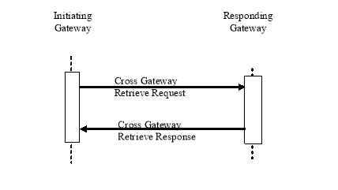

IHE IT Infrastructure (ITI)
Technical Framework
Revision 16.0 – Final Text
This section corresponds to transaction [ ITI- 39 ] of the IHE Technical Framework. Transaction [ ITI- 39 ] is used by the Initiating Gateway and Responding Gateway Actor s.
The scope of the Cross Gateway Retrieve transaction is semantically the same as the Retrieve Document Set [ITI-43] transaction. Differences from the Retrieve Document Set transactions are:

Figure 3.39.2-1: Use Case Roles
Actor: Initiating Gateway
Role: To formulate a Cross Gateway Retrieve in response to Retrieve Document Set transactions or other internal interaction.
Actor: Responding Gateway
Role: To return the documents requested.
Implementors of this transaction shall comply with all requirements described in ITI TF-2x: Appendix V Web Services for IHE Transactions.
ebRIM OASIS/ebXML Registry Information Model v3.0
ebRS OASIS/ebXML Registry Services Specifications v3.0
ITI TF-3:4 Metadata used in Document Sharing profiles
MTOM SOAP Message Transmission Optimization Mechanism http://www.w3.org/TR/soap12-mtom/

Figure 3.39.4-1: Interaction Diagram
The Cross Gateway Retrieve Request uses the same syntax and standards as the Retrieve Document Set Request. S ee Section ITI TF-2b: 3.43 .4.1 .
This message is initiated by the Initiating Gateway to retrieve a set of documents from another community represented by a Responding Gateway. The Initiating Gateway may be responding to a Retrieve Document Set transaction or may use a proprietary mechanism for triggering the Cross Gateway Retrieve.
The message semantics for Cross Gateway Retrieve are the same as Retrieve Document Set (s Section 3.43.4.1.2 ) . The Initiating Gateway shall specify the homeCommunityId parameter within the Retrieve Document Set. The homeCommunityId shall contain the value that identifies the community associated with the Responding Gateway.
Initiating Gateways which support the On-Demand Documents Option shall be capable of retrieving an On-Demand Document Entry either through internal mechanisms or, when the XDS Affinity Domain Option is also declared, through interaction with an XDS Document Consumer which supports the On-Demand Documents Option.
Responding Gateways which support the On-Demand Documents Option shall be able to respond to retrieval of an On-Demand Document Entry either through internal mechanisms or, when grouped with a Document Consumer, through interaction with appropriate XDS Actors which support On-Demand Documents. Responding Gateways which support the Persistence of Retrieved Documents Option shall specify the NewRepositoryUniqueId element indicating the document is available for later retrieval and be able to return exactly the same document in all future retrieve requests for the document identified by NewDocumentUniqueId.
Actors supporting this transaction shall support the Expected Actions described in the Section 3.43.4.1.3.
The Responding Gateway shall determine the local system or systems which hold the documents requested and interact with those systems. The Responding Gateway may use a Retrieve Document Set transaction or other internally defined interaction, to retrieve the document or documents. If more than one system is contacted the Responding Gateway shall consolidate the results from the multiple systems into one response to the Initiating Gateway. If both successes and failures are received the Responding Gateway may choose to use PartialSuccess status to reflect both failure and success. The Responding Gateway may alternatively choose to suppress the failures and report only successes.
If the Responding Gateway returns any Registry Error elements, the Responding Gateway shall include in the location attribute all the requirements stated in Section 3.43 plus the homeCommunityId of the Responding Gateway.
If the XDS Affinity Domain Option is supported, the Initiating Gateway shall, if needed, consolidate results from multiple Responding Gateways. This includes reflecting in the consolidated results returned to the originating Retrieve Document Set [ITI-43] all successes and failures received from Responding Gateways. If both successes and failures are received from Responding Gateways, the Initiating Gateway shall return both DocumentResponse and RegistryErrorList elements in one response and specify PartialSuccess status.
If the Initiating Gateway does not support the On-Demand Document Option, it will never send a Cross Gateway Retrieve request for an On-Demand Document. In this case, none of the attributes specific to On-Demand Documents will be included in the response.
If the Initiating Gateway does support the On-Demand Document Option, it will only direct Cross Gateway Retrieve requests for On-Demand Documents to responders which have returned an On-Demand Document Entry in a Cross Gateway Query response. Thus there are no compatibility concerns with this transaction.
This message will be triggered by a Cross Gateway Retrieve Message.
The message semantics for Cross Gateway Retrieve are the same as Retrieve Document Set. See Section 3.43.4.2.2.
Actors supporting this transaction shall support the Expected Actions described in Section 3.43.4.2.3.
The Cross Gateway Retrieve request and response will be transmitted using Synchronous or WS-Addressing based Asynchronous Web Services Exchange, according to the requirements specified in ITI TF-2x: Appendix V .3 . The protocol requirements are identical to the Retrieve Document Set except as noted below.
XML namespace prefixes are for informational purposes only and are documented in ITI TF-2x: Appendix V, Table V.2.4-1.
Responding Gateway: These are the requirements for the Cross Gateway Retrieve transaction presented in the order in which they would appear in the Responding Gateway WSDL definition:
Table 3.39.5-2: Requirements for portType and Binding attributes
|
Attribute |
Value |
|
/definitions/portType/operation@name |
RespondingGateway_CrossGatewayRetrieve |
|
/definitions/portType/operation/input/@wsaw:Action |
urn:ihe:iti:2007:CrossGatewayRetrieve |
|
/definitions/portType/operation/output/@wsaw:Action |
urn:ihe:iti:2007:CrossGatewayRetrieveResponse |
|
/definitions/binding/operation/wsoap12:operation/@soapActionRequired |
false |
These are the requirements that affect the wire format of the SOAP message. The other WSDL properties are only used within the WSDL definition and do not affect interoperability. Full sample request and response messages are in Section 3.43.5.1 Sample SOAP Messages .
For informative WSDL for the Responding Gateway see ITI TF-2x: Appendix W.
The <ihe:RetrieveDocumentSetRequest/> element is defined in Section 3.43.5. When used within the Cross Gateway Retrieve the <ihe:HomeCommunityId/> element is required.
The <ihe:RetrieveDocumentSetResponse/> element is defined in Section 3.43.5.
The samples in the following two sections show a typical SOAP request and its relative SOAP response. The sample messages also show the WS-Addressing headers <Action/>, <MessageID/>, <ReplyTo/>…; these WS-Addressing headers are populated according to the W3C WS-Addressing standard. The body of the SOAP message is omitted for brevity; in a real scenario the empty element will be populated with the appropriate metadata.
Samples presented in this section are also available online on the IHE FTP site, see ITI TF-2x: Appendix W.
<s:Envelope
xmlns:s="http://www.w3.org/2003/05/soap-envelope"
xmlns:a="http://www.w3.org/2005/08/addressing">
<s:Header>
<a:Action s:mustUnderstand="1">urn:ihe:iti:2007: CrossGatewayRetrieve </a:Action>
<a:MessageID>urn:uuid:0fbfdced-6c01-4d09-a110-2201afedaa02</a:MessageID>
<a:ReplyTo>
<a:Address>http://www.w3.org/2005/08/addressing/anonymous</a:Address>
</a:ReplyTo>
<a:To s:mustUnderstand="1">http://localhost:2647/XcaService/IHEXCAGateway.svc</a:To>
</s:Header>
<s:Body>
<RetrieveDocumentSetRequest xmlns="urn:ihe:iti:xds-b:2007">
<DocumentRequest>
<HomeCommunityId>urn:oid:1.2.3.4</HomeCommunityId>
<RepositoryUniqueId>1.3.6.1.4...1000</RepositoryUniqueId>
<DocumentUniqueId>1.3.6.1.4...2300</DocumentUniqueId>
</DocumentRequest>
<DocumentRequest>
<HomeCommunityId>urn:oid:1.2.3.5</HomeCommunityId>
<RepositoryUniqueId>1.3.6.1.4...2000</RepositoryUniqueId>
<DocumentUniqueId>1.3.6.1.4...2301</DocumentUniqueId>
</DocumentRequest>
</RetrieveDocumentSetRequest>
</s:Body>
</s:Envelope>
<s:Envelope
xmlns:s="http://www.w3.org/2003/05/soap-envelope"
xmlns:a="http://www.w3.org/2005/08/addressing">
<s:Header>
<a:Action s:mustUnderstand="1">urn:ihe:iti:2007: CrossGatewayRetrieve </a:Action>
<a:MessageID>urn:uuid:0fbfdced-6c01-4d09-a110-2201afedaa02</a:MessageID>
<a:ReplyTo>
<a:Address> http ://192.168.2.4:9080/XcaService/ InitiatingGatewayReceiver.svc
</a:Address>
</a:ReplyTo>
<a:To s:mustUnderstand="1">http://localhost:2647/XcaService/RespondingGatewayReceiver.svc</a:To>
</s:Header>
<s:Body>
<RetrieveDocumentSetRequest xmlns="urn:ihe:iti:xds-b:2007">
<DocumentRequest>
<HomeCommunityId>urn:oid:1.2.3.4</HomeCommunityId>
<RepositoryUniqueId>1.3.6.1.4...1000</RepositoryUniqueId>
<DocumentUniqueId>1.3.6.1.4...2300</DocumentUniqueId>
</DocumentRequest>
<DocumentRequest>
<HomeCommunityId>urn:oid:1.2.3.5</HomeCommunityId>
<RepositoryUniqueId>1.3.6.1.4...2000</RepositoryUniqueId>
<DocumentUniqueId>1.3.6.1.4...2301</DocumentUniqueId>
</DocumentRequest>
</RetrieveDocumentSetRequest>
</s:Body>
</s:Envelope>
<s:Envelope xmlns:s="http://www.w3.org/2003/05/soap-envelope" xmlns:a="http://www.w3.org/2005/08/addressing">
<s:Header>
<a:Action s:mustUnderstand="1"> urn:ihe:iti:2007:CrossGatewayRetrieveResponse </a:Action>
<a:RelatesTo>urn:uuid:0fbfdced-6c01-4d09-a110-2201afedaa02</a:RelatesTo>
</s:Header>
<s:Body>
<RetrieveDocumentSetResponse
xmlns="urn:ihe:iti:xds-b:2007"
xmlns:lcm="urn:oasis:names:tc:ebxml-regrep:xsd:lcm:3.0"
xmlns:query="urn:oasis:names:tc:ebxml-regrep:xsd:query:3.0"
xmlns:rim="urn:oasis:names:tc:ebxml-regrep:xsd:rim:3.0"
xmlns:rs="urn:oasis:names:tc:ebxml-regrep:xsd:rs:3.0">
<rs:RegistryResponse status="urn:oasis:names:tc:ebxml-regrep:ResponseStatusType:Success"/>
<DocumentResponse>
<HomeCommunityId>urn:oid:1.2.3.4</HomeCommunityId>
<RepositoryUniqueId>1.3.6.1.4...1000</RepositoryUniqueId>
<DocumentUniqueId>1.3.6.1.4...2300</DocumentUniqueId>
<mimeType>text/xml</mimeType>
<Document>UjBsR09EbGhjZ0dTQUxNQUFBUUNBRU1tQ1p0dU1GUXhEUzhi</Document>
</DocumentResponse>
<DocumentResponse>
<HomeCommunityId>urn:oid:1.2.3.5</HomeCommunityId>
<RepositoryUniqueId>1.3.6.1.4...2000</RepositoryUniqueId>
<DocumentUniqueId>1.3.6.1.4...2301</DocumentUniqueId>
<mimeType>text/xml</mimeType>
<Document>UjBsR09EbGhjZ0dTQUxNQUFBUUNBRU1tQ1p0dU1GUXhEUzhi</Document>
</DocumentResponse>
</RetrieveDocumentSetResponse>
</s:Body>
</s:Envelope>
<s:Envelope xmlns:s="http://www.w3.org/2003/05/soap-envelope" xmlns:a="http://www.w3.org/2005/08/addressing">
<s:Header>
<a:Action s:mustUnderstand="1"> urn:ihe:iti:2007:CrossGatewayRetrieveResponse </a:Action>
<a:MessageID>urn:uuid:D6C21225-8E7B-454E-9750-821622C099DB</ a :MessageID>
<a:RelatesTo>urn:uuid:0fbfdced-6c01-4d09-a110-2201afedaa02</a:RelatesTo>
<a:To s:mustUnderstand="1">http://localhost:2647/XcaService/InitiatingGatewayReceiver.svc</a:To>
</s:Header>
<s:Body>
<RetrieveDocumentSetResponse
xmlns="urn:ihe:iti:xds-b:2007"
xmlns:lcm="urn:oasis:names:tc:ebxml-regrep:xsd:lcm:3.0"
xmlns:query="urn:oasis:names:tc:ebxml-regrep:xsd:query:3.0"
xmlns:rim="urn:oasis:names:tc:ebxml-regrep:xsd:rim:3.0"
xmlns:rs="urn:oasis:names:tc:ebxml-regrep:xsd:rs:3.0">
<rs:RegistryResponse status="urn:oasis:names:tc:ebxml-regrep:ResponseStatusType:Success"/>
<DocumentResponse>
<HomeCommunityId>urn:oid:1.2.3.4</HomeCommunityId>
<RepositoryUniqueId>1.3.6.1.4...1000</RepositoryUniqueId>
<DocumentUniqueId>1.3.6.1.4...2300</DocumentUniqueId>
<mimeType>text/xml</mimeType>
<Document>UjBsR09EbGhjZ0dTQUxNQUFBUUNBRU1tQ1p0dU1GUXhEUzhi</Document>
</DocumentResponse>
<DocumentResponse>
<HomeCommunityId>urn:oid:1.2.3.5</HomeCommunityId>
<RepositoryUniqueId>1.3.6.1.4...2000</RepositoryUniqueId>
<DocumentUniqueId>1.3.6.1.4...2301</DocumentUniqueId>
<mimeType>text/xml</mimeType>
<Document>UjBsR09EbGhjZ0dTQUxNQUFBUUNBRU1tQ1p0dU1GUXhEUzhi</Document>
</DocumentResponse>
</RetrieveDocumentSetResponse>
</s:Body>
</s:Envelope>
Both the Initiating Gateway and Responding Gateway shall audit the Cross Gateway Retrieve. The audit entries shall be equivalent to the entries required for the Retrieve Document Set.
The Initiating Gateway:
The Responding Gateway: